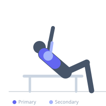

Exercise guide / Incline Squeeze Press with Plate
Incline Squeeze Press with Plate
An incline pressing variation where both palms press against opposite sides of a weight plate, maintaining continuous adduction force throughout the movement. The incline angle targets the clavicular pectoralis major while the sustained lateral squeeze on the plate creates constant isometric adduction that significantly increases medial pectoral fiber activation.
Primary muscles
pectoralis major clavicular
Secondary muscles
pectoralis major sternal
triceps medial head
deltoid anterior
Equipment
Weight Plates
Adjustable Bench (Incline / Decline)


Starting position
- Lie on an incline bench (30–45 degrees). Hold a weight plate with both palms pressing inward against its flat sides. Begin with arms extended above the upper chest.
Setup
- Select a weight plate appropriate for pressing — typically 10–25 kg. The plate should be held vertically with both palms on the faces. Lie on the incline bench.
Steps
- Step 1: Begin with the plate held above the upper chest, arms extended. Squeeze the plate hard inward with both palms.
- Step 2: Lower the plate toward the upper chest, maintaining maximum inward pressure.
- Step 3: Touch the upper chest gently with the plate and press back up.
- Step 4: At the top, maintain the squeeze and repeat. The squeeze never stops.
Coaching cues
- Try to press your palms through the plate — the squeeze generates the chest tension
- Think of crushing the plate: that internal force activates the medial pecs
Breathing
- Inhale on descent, exhale on press.
Range of motion
- Full range from upper chest to lockout. Squeeze maintained throughout.
Tempo
- 3-1-2-1
Common mistakes
- Relaxing the inward squeeze — the constant pressure is essential to the technique
- Using a plate too heavy to hold with palm-to-face grip
- Elbows flaring away — keep them pointing relatively forward due to the neutral grip
Safety
- Use a plate with smooth outer faces — textured plates can cause hand pain
- Ensure a secure grip before pressing — the plate should feel firmly held between both palms
Training
- hypertrophy: 10–15 reps
- hypertrophy: 3–4 sets
- Rest: {'hypertrophy': 75}